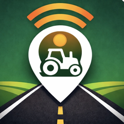

Free, public road-safety feeds generated from John Deere Operations Center equipment locations — warning drivers about slow-moving farm and maintenance equipment on public roads. Geometry is corrected to road centerlines downstream.
→ feed.json (WZDx v4.2, GeoJSON — for DOT / 511)
→ cifs.xml (Waze CIFS, XML — for Waze for Cities)
⚠️ Beta: feeds are live and valid, but work-zone coverage is limited while the program onboards organizations. Treat positions as best-effort.
Regenerated every 30 minutes. Open data (CC0). Validate WZDx with the official WZDx validator. Connect your equipment at Field Escort.